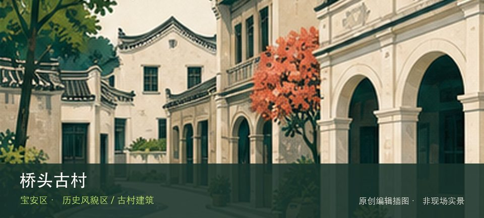

适合谁
适合建筑、地方史和社区观察者；参观时须尊重居民、宗教礼仪与生产秩序。

SHENZHEN GUIDE · 167
福海街道桥头社区 · 历史风貌区 / 古村建筑
桥头古村位于福海街道桥头社区，珠江口东岸传统聚落在工业城区中保留村落尺度，适合观察祠堂、旧巷与现代社区的叠合。把注意力放在桥头旧村街巷和宗祠与社区界面，能避免只凭名称或网红照片判断这里。阅读这处地点要把桥头旧村街巷与宗祠与社区界面放回仍在使用的街巷或社区中，不把历史空间当成布景。先看公开区域，再按居民生活、礼仪和开放边界调整停留，不进入封闭建筑。
WHY GO
适合建筑、地方史和社区观察者；参观时须尊重居民、宗教礼仪与生产秩序。
首次游览桥头古村不求走全，先完成桥头旧村街巷这一项观察，再根据同行者体力选择宗祠与社区界面，并保留原路退出方案。
公共交通先到福海街道桥头社区片区，再以桥头古村公开参观入口为终点；多入口地点须按计划游线选择入口，并预先锁定返程站点。
车辆停在桥头古村外围正规公共停车场后步行进入；不驶入窄巷，不占居民门口、作业区或消防通道。
10 月至次年 4 月步行较舒适；夏季避开正午，雨天留意石板、台阶和老建筑周边湿滑。
NEARBY IDEAS
 编辑配图·非现场实景
编辑配图·非现场实景
深圳市宝安区宝弘博物馆位于西乡，民办综合收藏馆的实际展陈以当期开放为准，观看重点应落在明确藏品门类与策展线索而非馆名规模。
 编辑配图·非现场实景
编辑配图·非现场实景
至美术馆位于宝安沙井后亭松安路全至科技创新园贰号楼，官方名录确认了它在科技创新园内的独立馆址。
 编辑配图·非现场实景
编辑配图·非现场实景
深圳市宝安区世纪琥珀博物馆位于松岗，琥珀形成、内含物、加工和产业链构成从自然材料到珠宝商品的完整路径，适合与水贝类场馆对照。